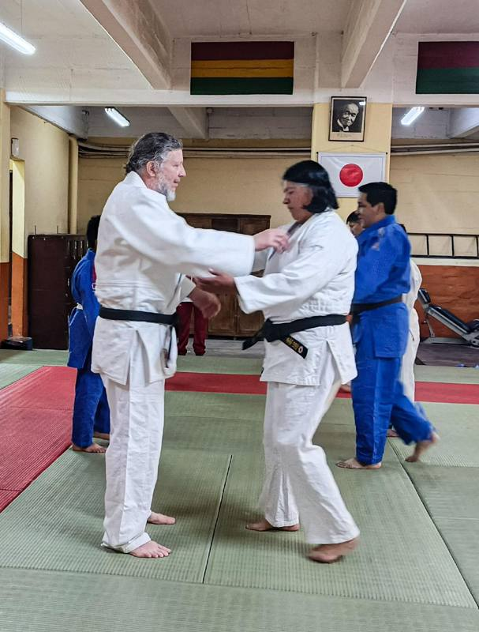
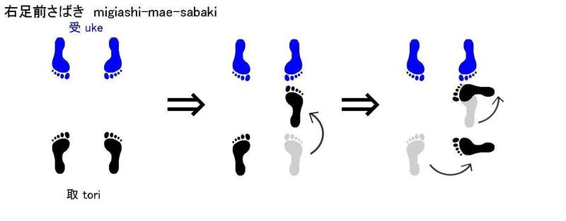
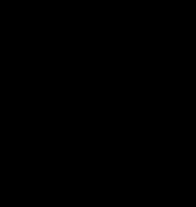
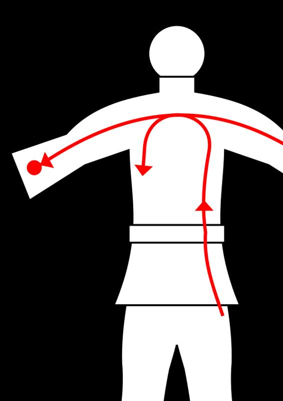
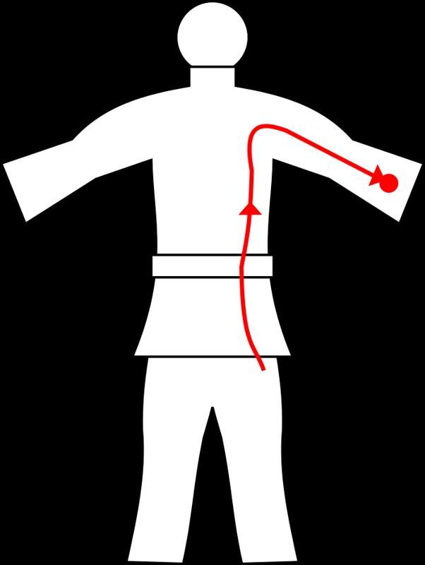
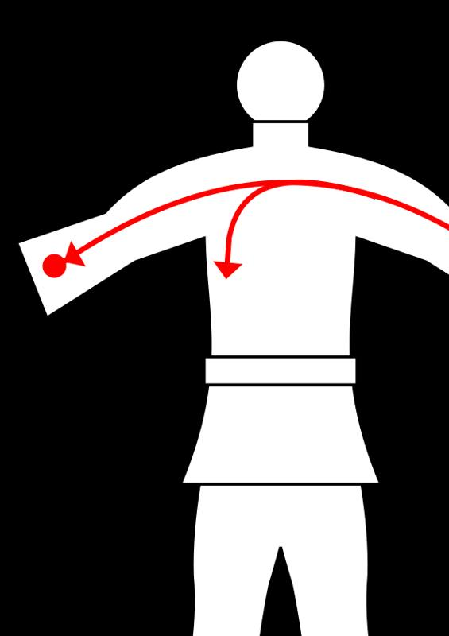

3. I fondamenti del movimento
Ogni tecnica nasce da cinque abilità preliminari: postura, presa, spostamento, rotazione del corpo e capacità di cadere in sicurezza. Chi aspira al 4° dan non può limitarsi a saperle fare: deve saperle spiegare, perché su di esse si fonda l'intera architettura del waza. Kuzushi, tsukuri e kake non sono fasi separate, ma aspetti di un unico movimento ritmico che presuppone una shisei corretta, una kumi-kata attiva, uno shintai che governa la distanza e un tai-sabaki che porta il corpo nel punto giusto al momento giusto. E poiché per ogni tori esiste un uke, nulla di tutto questo ha senso senza l'ukemi, la prima cosa che il metodo Kōdōkan insegna.
3.1 Le posizioni di base
La shisei (姿勢, postura) è la base da cui nasce ogni azione: la postura ideale garantisce libertà di movimento, stabilità intrinseca e prontezza di reazione. Il corpo è eretto e rilassato, le ginocchia morbide, il capo sull'asse del bacino, lo sguardo in avanti. La classificazione canonica distingue due grandi famiglie.
Shizen-tai (自然体, postura naturale): il corpo assume la posizione eretta e sciolta propria dello stare in piedi in modo naturale. Si articola in tre forme:
| Postura | Kanji | Descrizione |
|---|---|---|
| Shizen-hontai | 自然本体 | Postura naturale fondamentale: piedi approssimativamente alla larghezza delle spalle, sullo stesso asse |
| Migi-shizen-tai | 右自然体 | Postura naturale destra: dalla shizen-hontai il piede destro avanza leggermente in avanti e verso destra |
| Hidari-shizen-tai | 左自然体 | Postura naturale sinistra: il piede sinistro avanza leggermente in avanti e verso sinistra |
Jigō-tai (自護体, postura di difesa): la jigō-hontai (自護本体) si ottiene dalla shizen-hontai abbassando i lombi e aprendo i piedi più ampiamente; esistono anche le forme migi-jigō-tai e hidari-jigō-tai. Si usa per stabilizzarsi contro un avversario forte o per impostare azioni di contenimento; il prezzo pagato è una minore mobilità.
Quando due judoka si affrontano in guardia, la geometria della coppia si descrive con due termini:
- Ai-yotsu (相四つ, "quattro [mani] concordi", guardia chiusa): entrambi impugnano dallo stesso lato, destro contro destro o sinistro contro sinistro. La geometria è simmetrica e entrambi hanno accesso alle stesse famiglie di tecniche; vince chi produce kuzushi più rapidamente.
- Kenka-yotsu (喧嘩四つ, "quattro [mani] in conflitto", guardia aperta): un combattente destro contro uno sinistro, in geometria speculare dove l'angolo d'entrata dominante di ciascuno punta nella zona di difesa più forte dell'altro. È la situazione più comune in randori e in gara.
Attenzione a un errore frequente anche tra i cinture nere: ai-yotsu e kenka-yotsu riguardano la guardia — quale mano funge da hikite — e non il fatto che i lottatori siano "destri o mancini" di natura. È la configurazione delle prese a definire la situazione, non la lateralità innata.
3.2 Kumi-kata: le prese

Kumi-kata: la presa fondamentale tsurite-hikite (foto: Norkiña, CC BY-SA 4.0)
La kumi-kata (組方), "il modo di impugnare", non è un dettaglio preliminare: è il sottosistema tattico che determina la geometria dell'attacco successivo. Nella presa standard (hon-kumi) in guardia destra, la mano destra — la tsurite (釣手, "mano che solleva") — afferra il bavero sinistro dell'avversario, possibilmente profonda verso il collo; la mano sinistra — la hikite (引手, "mano che tira") — afferra la manica destra, di norma all'altezza del gomito o del polsino esterno. La tsurite stabilisce la direzione del kuzushi; la hikite guida e vincola il braccio avversario durante la rotazione della proiezione.
Le varianti principali da conoscere all'esame:
| Variante | Descrizione | Uso tipico |
|---|---|---|
| Presa incrociata (kujiku-kumi) | La mano incrocia la linea centrale verso bavero o manica opposta | Kuzushi fuori angolo, attacchi a sorpresa, sutemi |
| Presa oltre la spalla | Braccio sopra la spalla avversaria, presa sul dorso | O-goshi, ura-nage, controllo in kenka-yotsu |
| Doppio bavero (ryo-eri) | Entrambe le mani sui baveri | Ura-nage, o-soto-gari, controllo del ritmo |
| Kata-eri | Una sola mano sul bavero alto, l'altra libera o sulla schiena | Transizioni rapide, attacchi unilaterali |
| Una manica (kata-sode) | Controllo di una sola manica, anche a due mani | De-ashi-harai, drop seoi-nage, ippon-seoi-nage |
| Presa alla cintura (obi-dori) | Una o due mani sull'obi | Ura-nage, entrate ravvicinate (regolamentarmente limitata) |
Il principio didattico essenziale, ribadito da Kashiwazaki e formalizzato da Sacripanti, è che la presa è iniziativa, non difesa. Chi conquista la configurazione di presa superiore controlla la geometria della proiezione seguente; accettare passivamente la presa avversaria equivale a consegnare l'iniziativa (sen 先). Ogni azione di presa va quindi pensata "a ritroso dalla proiezione voluta", perseguendo la configurazione richiesta dalla propria tecnica obiettivo: le funzioni biomeccaniche della presa offensiva sono vettore di kuzushi, controllo dell'entrata, rottura della postura e predisposizione delle combinazioni.
3.3 Shintai: gli spostamenti
Lo shintai (進退, letteralmente "avanzare e retrocedere") indica il muoversi in tutte le direzioni mantenendo la postura. Il modo di portare i piedi è il suri-ashi (摺足): i piedi strisciano sul tatami senza mai sollevarsi, perché chi stacca il piede dal suolo o carica il peso su una gamba sola è immediatamente destabilizzabile. Esistono due modalità fondamentali:
- Ayumi-ashi (歩み足, "passo camminato"): come nel camminare normale, un piede supera l'altro, sempre strisciando. Serve a coprire distanza rapidamente e si esegue avanti, indietro e in ogni direzione.
- Tsugi-ashi (継足, "passo seguente"): i piedi non si superano mai. Avanza (o retrocede) per primo il piede del lato della guardia e l'altro lo segue riavvicinandosi senza oltrepassarlo, così che migi- o hidari-shizen-tai si conservino identiche. È il passo dell'avvicinamento al combattimento, usato sistematicamente nel Nage-no-kata.
Gli errori classici, che il futuro 4° dan deve saper riconoscere e sanzionare in sala, sono quattro:
- Incrociare i piedi durante lo spostamento: squilibrio immediato ed esposizione a de-ashi-harai e okuri-ashi-harai;
- Alzare il baricentro: sollevare troppo il piede dal tatami, caricare il peso su una gamba sola, inclinare il busto avanti o indietro;
- Riunire i piedi fino a farli toccare, annullando la base d'appoggio;
- Guardare i piedi anziché l'avversario.
Lo scopo dello shintai è duplice: mantenere invariata la base d'appoggio con il baricentro basso, e governare il ma-ai (間合い), la distanza-intervallo ottimale. Il ma-ai non è solo spazio: è distanza + timing + ritmo, ed è diverso per ciascun combattente, perché dipende da allungo, velocità e stile. Chi controlla la distanza controlla il combattimento. Sul piano didattico, shintai e kumi-kata generano insieme il ritmo dell'azione: lo spostamento ben condotto "invita" l'avversario nel tempo giusto, fondendo kuzushi, tsukuri e kake in un unico gesto.
3.4 Tai-sabaki: i movimenti rotanti

Tai-sabaki: sottrarre il corpo dalla linea d’attacco con la rotazione (foto: Chova, CC0)

Schema dei movimenti di tai-sabaki (illustrazione: Chrkl, CC BY-SA 3.0)
Il tai-sabaki (体捌, "governo del corpo") è il modo in cui il judoka cambia posizione e orientamento del corpo eseguendo o ricevendo una tecnica. Comprende il portamento del capo ("la testa poggia sul bacino, non sulle spalle"), l'uso degli occhi e l'uso del bacino. Si classificano quattro forme fondamentali:
| Tipo | Descrizione |
|---|---|
| Mae-sabaki (davanti) | Si avanza con un piede davanti al piede avversario, corpo ad angolo retto rispetto a uke |
| Ushiro-sabaki (dietro) | Si arretra con un piede prendendo distanza, corpo ad angolo retto |
| Mae-mawari-sabaki (rotazione anteriore) | Si avanza con un piede e si ruota davanti a uke volgendogli le spalle |
| Ushiro-mawari-sabaki (rotazione posteriore) | Si tira uke in avanti arretrando con un piede, poi si ruota volgendogli le spalle |
La rotazione avviene sempre sull'avampiede (tsumasaki), mai sul tallone: il perno è la pianta del piede, il bacino guida il giro, il capo resta sull'asse. Didatticamente si allenano tre famiglie di movimenti:
- Rotazione di 90°: sottrazione laterale dalla linea d'attacco, base del mae-sabaki e delle uscite diagonali;
- Rotazione di 180°: giro completo sul perno, base del mae-mawari-sabaki e delle entrate delle proiezioni in rotazione;
- Entrate e uscite diagonali: spostamento a 45° avanti o indietro (hiraki-ashi), che toglie il corpo dalla traiettoria mantenendo contatto e possibilità di contrattacco.
Il primo significato del tai-sabaki è difensivo: non essere più dove arriva la forza, uscire dalla linea dell'azione avversaria con tutto il corpo, non con il solo busto, secondo il principio del massimo rendimento (seiryoku-zen'yō 精力善用). Ma nel judo il tai-sabaki è soprattutto tsukuri offensivo: la stessa rotazione di 180° che sottrae il corpo è l'entrata di o-goshi, seoi-nage, ippon-seoi-nage, uchi-mata e harai-goshi, in cui il judoka gira dentro la guardia avversaria caricando uke sul bacino o sulla schiena. Di qui l'insegnamento chiave per l'esaminando: il tai-sabaki è l'alfabeto dello tsukuri — chi non possiede le rotazioni non possiede le entrate.
3.5 Ukemi: i principi delle cadute

Ushiro-ukemi, la caduta all’indietro (illustrazione: Chrkl, CC BY-SA 3.0)

Yoko-ukemi, la caduta laterale (illustrazione: Chrkl, CC BY-SA 3.0)

Mae-ukemi, la caduta in avanti (illustrazione: Chrkl, CC BY-SA 3.0)
L'ukemi (受身) deriva da ukeru, "ricevere": è l'arte di ricevere il suolo con il corpo. Jigorō Kanō fu il primo a sistematizzarne l'insegnamento: prima di lui non esisteva un metodo didattico ordinato per cadere in sicurezza.
La fisica è semplice ma va compresa a fondo. Una proiezione efficace può generare forze d'impatto pari a molte volte il peso corporeo in frazioni di secondo. L'ukemi riduce la pressione (forza divisa per superficie) combinando tre strategie:
- Ampliare la superficie: si atterra "piatti", distribuendo l'impatto su schiena, fianco e braccio, mai su un punto osseo;
- La battuta: uno o entrambi gli arti colpiscono il tatami con il palmo aperto e il braccio teso ma non rigido, a circa 45° rispetto al corpo, un istante prima del tronco: l'arto converte energia cinetica e allarga ulteriormente la superficie;
- Il corpo arrotondato "come una palla": mento al petto, schiena incurvata, così il corpo rotola convertendo il moto verticale in moto rotatorio anziché arrestarsi di colpo; il mento raccolto impedisce il colpo di frusta della nuca sul tatami.
I quattro tipi di caduta, con i loro punti di battuta:
| Caduta | Kanji | Uso e punti di battuta |
|---|---|---|
| Ushiro-ukemi (all'indietro) | 後受身 | Mento al petto, schiena tonda; si rotola da glutei ad anche a schiena; le braccia battono a 45° ai lati poco prima della schiena; la testa non tocca mai |
| Yoko-ukemi (laterale) | 横受身 | La caduta più usata nelle proiezioni reali; battuta del braccio teso a 45°, gamba superiore flessa a protezione dell'addome; fianco e lato della schiena assorbono il resto |
| Mae-ukemi (in avanti) | 前受身 | Si atterra su entrambi gli avambracci (palmi in giù), anca sollevata, testa girata di lato; utile anche per evitare il punteggio in gara |
| Zenpō-kaiten-ukemi (capriola avanti) | 前方回転受身 | Rotolamento dalla spalla del braccio-guida all'anca opposta lungo la diagonale della schiena; converte la caduta in rialzo immediato; è la caduta più frequente in randori |
Gli errori pericolosi, da vietare in sala senza eccezioni:
- Mano a terra: il polso in estensione sotto il peso del corpo espone a fratture del polso, dell'avambraccio e dello scafoide;
- Gomito teso come punto d'impatto: rischio di frattura o lussazione — l'arto deve battere piatto, dal palmo alla spalla;
- Braccio d'appoggio perpendicolare al corpo ("posting"): rischio per clavicola e spalla;
- Mento sollevato, respiro trattenuto, corpo rigido: la tensione aumenta il rischio. Si cade rilassati e con respirazione naturale.
Infine, il valore didattico che ogni esaminando deve saper argomentare: prima si impara a cadere, poi a proiettare. In ogni proiezione esistono due ruoli, tori (取り, chi esegue) e uke (受け, chi riceve), e il metodo Kōdōkan insegna l'ukemi prima di qualunque waza: solo chi sa cadere può ricevere le proiezioni a ritmo reale senza paura e comprendere dall'interno la meccanica della tecnica che poi eseguirà. La progressione canonica va dalle cadute da sdraiati a quelle da seduti, accosciati, in piedi, in movimento e infine da proiezione reale, su entrambi i lati, finché l'ukemi diventa riflesso. Non a caso perfino l'ordinamento del Gokyō tiene conto della facilità di caduta per uke: la sicurezza di chi riceve è iscritta nel DNA didattico del judo.